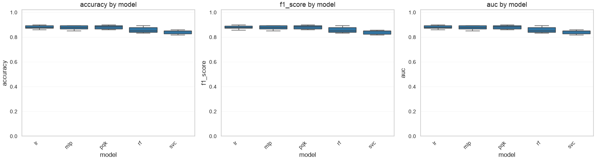
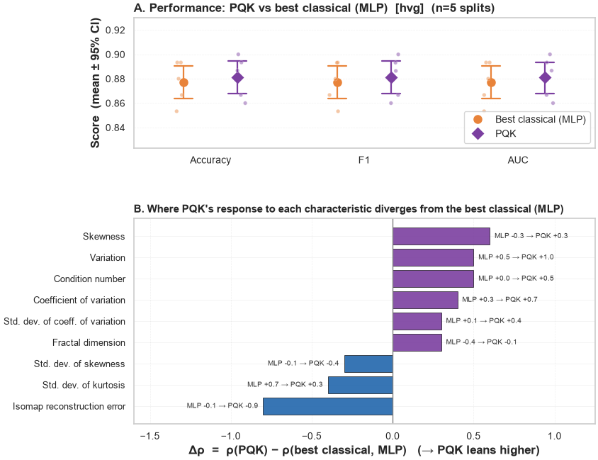

QProfiler on the CD4-vs-CD8 T-cell task (with PQK)#
Benchmarks classical models and the projected quantum kernel (PQK) on the one non-trivial single-cell binary task: CD4 vs CD8 T cells.
The other two tasks built earlier (t_vs_mono, lymphoid_vs_myeloid) are near-perfectly separable — every model saturates at ~1.0, so they can’t discriminate methods, which is why we focus on CD4 vs CD8 here.
How to use: set models / embeddings / PQK options in the Configuration cell and run top-to-bottom. Classical models finish in seconds; PQK runs on the local statevector simulator with a shallow, tuned feature map that keeps it fast (see §5).
Results changed in this release. These outputs were produced before QProfiler’s train/test contamination was fixed: the feature scaler used to be fit on
concat([X_train, X_test]), so the test distribution informed the transform, and the train/test split was unseeded, soseeddid not make a run reproducible. Both are fixed (scale_train_testfits on train only; the split takesrandom_state=seed + iteration). Numbers below are therefore not comparable to a fresh run of the same config — the corrected numbers are usually slightly lower, which is the point. SeeCHANGELOG.md.
1. Setup and imports#
[1]:
import os
import sys
import json
import shutil
import glob
import yaml
import numpy as np
import pandas as pd
import anndata as ad
import matplotlib.pyplot as plt
import seaborn as sns
import qbiocode as qbc
from qbiocode.apps.qprofiler import qprofiler as profiler
from qbiocode import compute_results_correlation, plot_results_correlation
sns.set_style("whitegrid")
# ---- Portable paths (relative to this notebook; run it from its own directory) ----
NB_DIR = os.getcwd() # this notebook's own directory
DATA_DIR = os.path.join(NB_DIR, "data", "sc_binary") # per-task CSVs (shipped + rebuildable)
H5AD_DIR = os.path.join(NB_DIR, "data") # source h5ads for optional rebuild
CONFIG_TEMPLATE = os.path.join(NB_DIR, "configs", "config.yaml")
OUT_DIR = NB_DIR # ModelResults.csv etc. land here
os.makedirs(DATA_DIR, exist_ok=True)
# QProfiler writes outputs to the current working directory -> pin it to OUT_DIR.
os.chdir(OUT_DIR)
print("qbiocode", qbc.__version__)
print("cwd (outputs):", os.getcwd())
<env>/lib/python3.12/site-packages/tqdm/auto.py:21: TqdmWarning: IProgress not found. Please update jupyter and ipywidgets. See https://ipywidgets.readthedocs.io/en/stable/user_install.html
from .autonotebook import tqdm as notebook_tqdm
qbiocode 0.1.0
cwd (outputs): <repo>/docs/source/tutorials/QProfiler
2. Configuration — choose task, modality, models, embeddings#
Everything you’d normally tweak lives here.
TASK: one of the three tasks, or"all"to benchmark all three (needed for the cross-task complexity correlation).MODALITY: what features feed the pipeline —"hvg"— gene expression (the original behavior): top-N_FEATUREShigh-variance HVGs."adt"— protein: the 32 scaled TotalSeqB ADT markers from the h5ad’s CITE-seq layer (obsm['X_protein']). Leakage-safe drops the 6 lineage-defining proteins → 26 markers."hvg+adt"— early fusion: concatenate the top-N_FEATURESHVGs with all non-leakage ADTs into one feature table (columns prefixedrna:/adt:), then run the same pipeline.
ADT and fusion read the protein layer, which only ships in
pbmc5k_small_cd4_vs_cd8.h5ad, so those modalities apply to ``cd4_vs_cd8`` only (t_vs_mono/lymphoid_vs_myeloidstay HVG).LEAKAGE_SAFE: drop the lineage-defining markers that trivially reveal the label — genes (e.g.CD3D,LYZ,MS4A1) and, for ADT/fusion, proteins (CD3,CD4,CD8a, …). Recommended — otherwise classification is trivial.N_FEATURES: number of top-variance HVGs exported (also the HVG portion of the fusion). Kept small so complexity metrics and QML stay light on a laptop.MODELS: classicalsvc dt lr nb rf mlp(fast) and/or quantumqsvc pqk vqc qnn(slow on the local simulator).
[2]:
# ============================ EXPERIMENT CONFIG ============================
# Focus on CD4 vs CD8 -- the only discriminative task (the other two saturate at ~1.0).
TASK = "cd4_vs_cd8"
LEAKAGE_SAFE = True # drop label-defining marker genes/proteins
N_FEATURES = 50 # top-variance HVGs to export per task (keeps compute light)
# Input modality -- what features feed the pipeline. ADT/fusion need the h5ad's CITE-seq
# protein layer, which only ships for cd4_vs_cd8, so they apply to that task only.
# "hvg" -> gene expression: top-N_FEATURES high-variance HVGs (the original behavior)
# "adt" -> protein: the 32 scaled TotalSeqB ADT markers (leakage-safe drops 6 -> 26)
# "hvg+adt" -> early fusion: concat top-N_FEATURES HVGs + all non-leakage ADTs (~N+26 cols)
MODALITY = "hvg" # "hvg" | "adt" | "hvg+adt"
MODELS = ["lr", "svc", "rf", "mlp", "pqk"] # classical baselines + projected quantum kernel
EMBEDDINGS = ["pca"] # e.g. ["none"], ["pca","isomap"]
N_COMPONENTS = 8 # dims after embedding (= qubit count for PQK)
ITER = 5 # train/test splits per model-embedding
TEST_SIZE = 0.3
# PQK feature-map tuning. The shipped template uses a DEEP ZZ map (pairwise, reps=4) that
# suffers quantum-kernel *concentration*: the <X>,<Y>,<Z> projections collapse toward 0, so
# the kernel carries little signal (and it is slow). A SHALLOW, linearly-entangled ZZ map
# (reps=1) fixes both -- on cd4_vs_cd8 it lifts PQK accuracy ~0.81 -> ~0.88 and is ~3x faster.
PQK_ARGS = {"encoding": "ZZ", "entanglement": "linear", "primitive": "estimator", "reps": 1}
# ---- Quantum backend --------------------------------------------------------------------
# USE_HARDWARE=False -> local statevector simulator (default; no credentials, runs anywhere).
# USE_HARDWARE=True -> run the QML models on IBM Quantum HARDWARE. HW_BACKEND picks the device
# and configs/credentials.json supplies only the QiskitRuntimeService auth (channel / instance
# / token / url). Copy configs/credentials.example.json -> configs/credentials.json and fill it
# in first (credentials.json is gitignored, so the token is never committed).
USE_HARDWARE = False
HW_BACKEND = "ibm_least" # device when USE_HARDWARE=True: "ibm_least" (least-busy real device),
# a named device e.g. "ibm_torino", "simulator_aer", or "noisy_<device>"
CREDENTIALS_PATH = os.path.join(NB_DIR, "configs", "credentials.json")
# ===========================================================================
ALL_TASKS = ["t_vs_mono", "lymphoid_vs_myeloid", "cd4_vs_cd8"]
ALL_MODALITIES = ["hvg", "adt", "hvg+adt"]
assert TASK in ALL_TASKS, f"unknown TASK {TASK!r}"
assert MODALITY in ALL_MODALITIES, f"unknown MODALITY {MODALITY!r}"
print("Task:", TASK, "| Modality:", MODALITY, "| Models:", MODELS)
print("Embeddings:", EMBEDDINGS, "| n_components:", N_COMPONENTS, "| iters:", ITER)
print("PQK_ARGS:", PQK_ARGS)
print("Backend:", f"IBM Quantum HARDWARE ({HW_BACKEND})" if USE_HARDWARE else "local simulator")
Task: cd4_vs_cd8 | Modality: hvg | Models: ['lr', 'svc', 'rf', 'mlp', 'pqk']
Embeddings: ['pca'] | n_components: 8 | iters: 5
PQK_ARGS: {'encoding': 'ZZ', 'entanglement': 'linear', 'primitive': 'estimator', 'reps': 1}
Backend: local simulator
3. Build per-task CSV datasets#
QProfiler reads plain CSVs (features in columns, label in the last column). We export one CSV per task from the small balanced h5ads (500 cells, 250/class), with columns chosen by MODALITY:
"hvg"— top-N_FEATUREShigh-variance HVGs (optionally excluding label-defining marker genes to avoid leakage)."adt"— the scaled TotalSeqB ADT markers fromobsm['X_protein'](leakage-safe drops the 6 lineage-defining proteins → 26)."hvg+adt"— early fusion: the HVG block and the ADT block concatenated side by side, with columns prefixedrna:/adt:.
Files are named pbmc-<task>.csv so they share the pbmc datatype prefix, which lets QProfiler correlate complexity to performance across the three tasks (HVG modality only — ADT/fusion build cd4_vs_cd8 alone). Switching MODALITY rebuilds the same file with the new column set.
[3]:
def _select_hvgs(adata, n_features, leakage_safe):
"""Return (X, names) for the top-`n_features` high-variance HVGs (leakage-safe optional)."""
keep = adata.var["highly_variable"].to_numpy().copy()
if leakage_safe and "is_label_leakage" in adata.var:
keep &= ~adata.var["is_label_leakage"].to_numpy()
X = adata[:, keep].X
X = np.asarray(X.todense()) if hasattr(X, "todense") else np.asarray(X)
genes = adata.var_names[keep].to_numpy()
order = np.argsort(X.var(axis=0))[::-1][:n_features] # rank by variance, take top-N
return X[:, order], genes[order]
def _select_adts(adata, leakage_safe):
"""Return (X, names) for the scaled ADT markers in obsm['X_protein'] (leakage-safe optional).
All non-leakage markers are kept (there are only ~32), so there is no top-N cap here.
"""
if "X_protein" not in adata.obsm or "protein_names" not in adata.uns:
raise KeyError("h5ad has no CITE-seq protein layer (obsm['X_protein'] / uns['protein_names'])")
X = np.asarray(adata.obsm["X_protein"])
names = np.asarray(adata.uns["protein_names"], dtype=object)
keep = np.ones(len(names), dtype=bool)
if leakage_safe:
leak = set(adata.uns.get("feature_sets", {}).get("label_leakage_proteins", []))
keep = np.array([nm not in leak for nm in names])
return X[:, keep], names[keep]
def export_task_csv(task, n_features, leakage_safe, modality, data_dir, h5ad_dir):
"""Write pbmc-<task>.csv (features + label) for the chosen modality and return (path, info).
modality: "hvg" (genes), "adt" (proteins), or "hvg+adt" (early-fusion concatenation).
Fusion columns are prefixed rna:/adt: to avoid gene/protein name collisions. In every
case the label MUST be the last column (QProfiler reads it positionally).
"""
adata = ad.read_h5ad(os.path.join(h5ad_dir, f"pbmc5k_small_{task}.h5ad"))
if modality == "hvg":
X, names = _select_hvgs(adata, n_features, leakage_safe)
n_hvg, n_adt = X.shape[1], 0
elif modality == "adt":
X, names = _select_adts(adata, leakage_safe)
n_hvg, n_adt = 0, X.shape[1]
elif modality == "hvg+adt": # early fusion: concat both blocks
Xg, genes = _select_hvgs(adata, n_features, leakage_safe)
Xp, prots = _select_adts(adata, leakage_safe)
X = np.concatenate([Xg, Xp], axis=1)
names = np.array([f"rna:{g}" for g in genes] + [f"adt:{p}" for p in prots], dtype=object)
n_hvg, n_adt = Xg.shape[1], Xp.shape[1]
else:
raise ValueError(f"unknown modality {modality!r}")
df = pd.DataFrame(X, columns=list(names))
df["label"] = adata.obs["label"].astype(str).to_numpy() # label MUST be last column
path = os.path.join(data_dir, f"pbmc-{task}.csv")
df.to_csv(path, index=False)
info = {"task": task, "modality": modality, "n_cells": df.shape[0],
"n_features": X.shape[1], "n_hvg": n_hvg, "n_adt": n_adt,
"classes": df["label"].value_counts().to_dict()}
return path, info
def _h5ad_has_protein(h5ad_path):
"""True if the h5ad carries a CITE-seq protein layer (needed for adt / hvg+adt)."""
if not os.path.exists(h5ad_path):
return False
a = ad.read_h5ad(h5ad_path, backed="r")
return "X_protein" in a.obsm and "protein_names" in a.uns
# Rebuild each task's CSV for the chosen MODALITY.
# "hvg": rebuild from the h5ad when present; otherwise reuse the CSV shipped in DATA_DIR.
# "adt"/"hvg+adt": require the h5ad's protein layer, so only tasks that have one are built;
# others are skipped (only pbmc5k_small_cd4_vs_cd8.h5ad ships that layer).
for t in ALL_TASKS:
h5ad = os.path.join(H5AD_DIR, f"pbmc5k_small_{t}.h5ad")
csv = os.path.join(DATA_DIR, f"pbmc-{t}.csv")
if MODALITY == "hvg":
if os.path.exists(h5ad):
_, info = export_task_csv(t, N_FEATURES, LEAKAGE_SAFE, MODALITY, DATA_DIR, H5AD_DIR)
print("rebuilt from h5ad:", info)
else:
assert os.path.exists(csv), (
f"no h5ad and no pre-built CSV for {t}; "
f"add pbmc5k_small_{t}.h5ad to {H5AD_DIR} to build it")
print(f"using shipped CSV (no h5ad for {t}):", os.path.basename(csv))
else: # adt / hvg+adt need the protein layer
if _h5ad_has_protein(h5ad):
_, info = export_task_csv(t, N_FEATURES, LEAKAGE_SAFE, MODALITY, DATA_DIR, H5AD_DIR)
print("rebuilt from h5ad:", info)
else:
print(f"skipping {t}: MODALITY={MODALITY!r} needs a CITE-seq protein layer "
f"(only cd4_vs_cd8 ships one)")
# The selected task must exist as a CSV after the loop (fails loudly for an unbuildable request,
# e.g. MODALITY='adt' on a task with no protein layer).
if TASK != "all":
sel = os.path.join(DATA_DIR, f"pbmc-{TASK}.csv")
assert os.path.exists(sel), (
f"MODALITY={MODALITY!r} could not build {TASK!r} (no CITE-seq protein layer). "
f"Use MODALITY='hvg', or pick a task whose h5ad has obsm['X_protein'].")
print("\nCSVs in", DATA_DIR, "->",
sorted(os.path.basename(p) for p in glob.glob(DATA_DIR + "/*.csv")))
using shipped CSV (no h5ad for t_vs_mono): pbmc-t_vs_mono.csv
using shipped CSV (no h5ad for lymphoid_vs_myeloid): pbmc-lymphoid_vs_myeloid.csv
rebuilt from h5ad: {'task': 'cd4_vs_cd8', 'modality': 'hvg', 'n_cells': 500, 'n_features': 50, 'n_hvg': 50, 'n_adt': 0, 'classes': {'CD4_T': 250, 'CD8_T': 250}}
CSVs in <repo>/docs/source/tutorials/QProfiler/data/sc_binary -> ['pbmc-cd4_vs_cd8.csv', 'pbmc-lymphoid_vs_myeloid.csv', 'pbmc-t_vs_mono.csv']
4. Assemble the QProfiler config#
We start from the shipped YAML template and override our choices, then resolve the quantum backend from the USE_HARDWARE flag:
USE_HARDWARE = False(default) →backend = "simulator": the local statevector simulator. No credentials needed; runs anywhere.USE_HARDWARE = True→ run the QML models on IBM Quantum hardware. The device is chosen in the notebook viaHW_BACKEND("ibm_least"auto-picks the least-busy real device, or name one directly, e.g."ibm_torino");configs/credentials.jsonsupplies only theQiskitRuntimeServiceauth. First copy the template and fill it in:cp configs/credentials.example.json configs/credentials.json # then edit credentials.json: channel / instance / token / url
apply_backend()setsconfig["backend"] = HW_BACKENDand injects the auth as theibm_channel/ibm_instance/ibm_token/ibm_urlargs that qbiocode’sget_creds()consumes.credentials.jsonis gitignored, so your API token is never committed.
[4]:
# Start from the shipped template (keeps all model-arg blocks) and override our choices.
config = yaml.safe_load(open(CONFIG_TEMPLATE))
config.update({
"folder_path": os.path.abspath(DATA_DIR), # absolute -> independent of cwd
"file_dataset": "ALL" if TASK == "all" else [f"pbmc-{TASK}.csv"],
"model": MODELS,
"embeddings": EMBEDDINGS,
"n_components": N_COMPONENTS,
"iter": ITER,
"test_size": TEST_SIZE,
"stratify": ["y"],
"scaling": ["True"],
"n_jobs": 1,
"grid_search": False,
})
config["pqk_args"] = PQK_ARGS # tuned shallow ZZ map (overrides the template default)
def apply_backend(config, use_hardware, hw_backend, credentials_path):
"""Set config['backend'] (and, for hardware, the IBM Quantum credentials) in place.
The device is chosen in the notebook via hw_backend; credentials.json supplies only the
QiskitRuntimeService auth (channel/instance/token/url), injected as the args that qbiocode's
get_creds() / get_backend_session() consume. Returns the resolved backend string.
"""
if not use_hardware:
config["backend"] = "simulator"
return config["backend"]
config["backend"] = hw_backend # device is set in the notebook, not in credentials.json
assert os.path.exists(credentials_path), (
f"USE_HARDWARE=True but no credentials file at {credentials_path}.\n"
f"Copy configs/credentials.example.json -> configs/credentials.json and fill in "
f"your IBM Quantum channel / instance / token / url.")
with open(credentials_path) as f:
creds = json.load(f)
missing = [k for k in ("channel", "instance", "token", "url") if not creds.get(k)]
assert not missing, f"credentials.json is missing required field(s): {missing}"
# QiskitRuntimeService creds -> the arg names qbiocode.utils.ibm_account.get_creds() reads.
config["ibm_channel"] = creds["channel"]
config["ibm_instance"] = creds["instance"]
config["ibm_token"] = creds["token"]
config["ibm_url"] = creds["url"]
config["name"] = None # use the explicit token, not a saved-account alias
config["qiskit_json_path"] = None # rely solely on credentials.json (not ~/.qiskit/...)
# sim_method is only read by the aer / noisy_* backends; harmless for real hardware.
config["sim_method"] = creds.get("sim_method", "statevector")
return config["backend"]
backend = apply_backend(config, USE_HARDWARE, HW_BACKEND, CREDENTIALS_PATH)
print("file_dataset:", config["file_dataset"])
print("models:", config["model"], "| embeddings:", config["embeddings"])
print("pqk_args:", config["pqk_args"])
if USE_HARDWARE:
print(f"backend: {backend} (IBM Quantum hardware; instance={config['ibm_instance']})")
else:
print(f"backend: {backend} (local statevector simulator)")
file_dataset: ['pbmc-cd4_vs_cd8.csv']
models: ['lr', 'svc', 'rf', 'mlp', 'pqk'] | embeddings: ['pca']
pqk_args: {'encoding': 'ZZ', 'entanglement': 'linear', 'primitive': 'estimator', 'reps': 1}
backend: simulator (local statevector simulator)
5. Run QProfiler#
QProfiler writes/appends to ModelResults.csv, RawDataEvaluation.csv, and results.pkl in the working directory, so we clear any stale outputs first (otherwise rows accumulate across runs).
[5]:
# Clear stale outputs so results reflect only this run.
for f in ["ModelResults.csv", "RawDataEvaluation.csv", "results.pkl"]:
if os.path.exists(f):
os.remove(f)
# PQK's projection cache keys on the feature-map parameters (encoding, entanglement,
# reps, primitive) as well as dataset/embedding/iteration, so a feature-map change no
# longer reloads stale projections. Purged anyway, to keep this run self-contained.
shutil.rmtree("pqk_projections", ignore_errors=True)
profiler.main(config)
model_results = pd.read_csv("ModelResults.csv")
print("ModelResults:", model_results.shape,
"| datasets:", model_results["Dataset"].unique().tolist())
model_results[["Dataset", "model", "embeddings", "iteration",
"accuracy", "f1_score", "auc"]].head(12)
Processing file: pbmc-cd4_vs_cd8.csv
at datapoint 0
at datapoint 100
at datapoint 200
at datapoint 300
at datapoint 0
at datapoint 100
at datapoint 0
at datapoint 100
at datapoint 200
at datapoint 300
at datapoint 0
at datapoint 100
at datapoint 0
at datapoint 100
at datapoint 200
at datapoint 300
at datapoint 0
at datapoint 100
at datapoint 0
at datapoint 100
at datapoint 200
at datapoint 300
at datapoint 0
at datapoint 100
at datapoint 0
at datapoint 100
at datapoint 200
at datapoint 300
at datapoint 0
at datapoint 100
ModelResults: (25, 32) | datasets: ['pbmc-cd4_vs_cd8.csv']
[5]:
| Dataset | model | embeddings | iteration | accuracy | f1_score | auc | |
|---|---|---|---|---|---|---|---|
| 0 | pbmc-cd4_vs_cd8.csv | lr | pca | 1 | 0.893333 | 0.892646 | 0.893333 |
| 1 | pbmc-cd4_vs_cd8.csv | mlp | pca | 1 | 0.880000 | 0.879915 | 0.880000 |
| 2 | pbmc-cd4_vs_cd8.csv | pqk | pca | 1 | 0.900000 | 0.899960 | 0.900000 |
| 3 | pbmc-cd4_vs_cd8.csv | rf | pca | 1 | 0.893333 | 0.893029 | 0.893333 |
| 4 | pbmc-cd4_vs_cd8.csv | svc | pca | 1 | 0.860000 | 0.858178 | 0.860000 |
| 5 | pbmc-cd4_vs_cd8.csv | lr | pca | 2 | 0.860000 | 0.859494 | 0.860000 |
| 6 | pbmc-cd4_vs_cd8.csv | mlp | pca | 2 | 0.866667 | 0.866667 | 0.866667 |
| 7 | pbmc-cd4_vs_cd8.csv | pqk | pca | 2 | 0.860000 | 0.859994 | 0.860000 |
| 8 | pbmc-cd4_vs_cd8.csv | rf | pca | 2 | 0.833333 | 0.832731 | 0.833333 |
| 9 | pbmc-cd4_vs_cd8.csv | svc | pca | 2 | 0.820000 | 0.817658 | 0.820000 |
| 10 | pbmc-cd4_vs_cd8.csv | lr | pca | 3 | 0.900000 | 0.899782 | 0.900000 |
| 11 | pbmc-cd4_vs_cd8.csv | mlp | pca | 3 | 0.893333 | 0.893314 | 0.893333 |
6. Visualize model performance#
[6]:
metrics = ["accuracy", "f1_score", "auc"]
multi_ds = model_results["Dataset"].nunique() > 1
fig, axes = plt.subplots(1, 3, figsize=(16, 4.5))
for ax, metric in zip(axes, metrics):
if multi_ds:
sns.boxplot(data=model_results, x="model", y=metric, hue="Dataset", ax=ax)
ax.legend_.set_title("task") if ax.legend_ else None
else:
sns.boxplot(data=model_results, x="model", y=metric, ax=ax)
ax.set_title(f"{metric} by model")
ax.set_ylim(0, 1.02)
ax.set_xticklabels(ax.get_xticklabels(), rotation=45, ha="right")
if multi_ds and ax is not axes[-1] and ax.legend_:
ax.legend_.remove()
plt.tight_layout()
plt.show()
# Compact summary table: median metric per model (x task if multiple)
grp = ["Dataset", "model"] if multi_ds else ["model"]
summary = (model_results.groupby(grp)[metrics].median().round(3))
summary

[6]:
| accuracy | f1_score | auc | |
|---|---|---|---|
| model | |||
| lr | 0.880 | 0.879 | 0.880 |
| mlp | 0.880 | 0.880 | 0.880 |
| pqk | 0.887 | 0.886 | 0.887 |
| rf | 0.853 | 0.853 | 0.853 |
| svc | 0.853 | 0.851 | 0.853 |
7. Classical vs quantum: performance and behaviour#
Two complementary views of how the projected quantum kernel (PQK) compares with the single best classical model — the classical classifier with the highest median F1, not an average over the classical methods — in one publication figure.
Panel A — performance. PQK against the best classical model across accuracy, F1 and AUC: the marker is the mean, whiskers the 95% CI over the 5 splits, and faint dots the individual splits. PQK sits a touch above its strongest classical competitor on all three metrics, but the intervals overlap — a small, not decisive, edge.
Panel B — behaviour. Using QBioCode’s compute_results_correlation, we take each model’s per-split Spearman ρ between a data-complexity characteristic and F1, then plot Δρ = ρ(PQK) − ρ(best classical) for the characteristics where the two diverge most (|Δρ| ≥ 0.3). Purple bars = PQK’s F1 tracks that characteristic more positively than the best classical model; blue = less. This is where quantum and classical “look at” the data differently — the annotation on each bar gives the
underlying best-classical → PQK ρ.
⚠️ Power note. Each split is one point, so both panels rest on n = 5 — read the direction and size of the gap, not p-values. A robust classical-vs-quantum claim needs a panel of datasets spanning complexity.
[7]:
# Classical vs quantum, two ways in one figure. The classical baseline is the SINGLE BEST
# classical model (highest median F1), not an average across classical methods.
# Panel A — performance: PQK vs best classical across accuracy/F1/AUC (mean ± 95% CI, points).
# Panel B — behaviour: how PQK's per-split correlation to each data characteristic diverges
# from the best classical (Δρ = ρ_PQK − ρ_best-classical).
from matplotlib.gridspec import GridSpec
df7 = model_results[model_results["Dataset"].str.contains("cd4_vs_cd8")].copy()
QUANTUM = {"pqk", "qsvc", "vqc", "qnn"}
present = df7["model"].unique().tolist()
CLASSICAL = [m for m in present if m not in QUANTUM]
QUANT = next(m for m in present if m in QUANTUM) # PQK here
QLABEL = QUANT.upper()
BEST_CLS = df7[df7["model"].isin(CLASSICAL)].groupby("model")["f1_score"].median().idxmax()
BLABEL = f"Best classical ({BEST_CLS.upper()})"
CCOL, QCOL, NEG = "#E8833A", "#7B3FA0", "#2166AC"
METLAB = {"accuracy": "Accuracy", "f1_score": "F1", "auc": "AUC"}
# ---- Panel A data: best classical model vs the quantum model, per split ----
recs = []
for it, g in df7.groupby("iteration"):
for met in METLAB:
recs.append({"metric": METLAB[met], "group": BLABEL,
"value": float(g[g["model"] == BEST_CLS][met].iloc[0])})
recs.append({"metric": METLAB[met], "group": QLABEL,
"value": float(g[g["model"] == QUANT][met].iloc[0])})
tidy = pd.DataFrame(recs)
# ---- Panel B data: ρ(characteristic, F1) per model -> best-classical-vs-quantum divergence ----
_, correlations_df = compute_results_correlation(model_results, correlation="spearman", thresh=0.7)
cf = correlations_df[correlations_df["metric"] == "f1_score"].copy()
cf["model"] = cf["model_embed_datatype"].str.split("_").str[0]
mat = cf.pivot_table(index="feature", columns="model", values="correlation")
PRETTY = {
"Coefficient of Variation %": "Coefficient of variation",
"std_co_of_v": "Std. dev. of coeff. of variation",
"std_skew": "Std. dev. of skewness",
"std_kurt": "Std. dev. of kurtosis",
"std_var": "Std. dev. of variation",
"Mean Log Kernel Density": "Mean log kernel density",
"Isomap Reconstruction Error": "Isomap reconstruction error",
}
mat.index = [PRETTY.get(f, f) for f in mat.index]
div = pd.DataFrame({"classical": mat[BEST_CLS], "quantum": mat[QUANT]}).dropna()
div["delta"] = div["quantum"] - div["classical"]
div_show = div[div["delta"].abs() >= 0.3] # keep the biggest divergences
if len(div_show) < 4:
div_show = div.reindex(div["delta"].abs().sort_values(ascending=False).index[:10])
div_show = div_show.sort_values("delta")
# ---- figure -----------------------------------------------------------------------------
n = len(div_show)
fig = plt.figure(figsize=(8.4, 3.3 + 0.46 * n))
gs = GridSpec(2, 1, height_ratios=[3.0, 0.46 * n + 0.6], hspace=0.42)
axA = fig.add_subplot(gs[0])
sns.pointplot(data=tidy, x="metric", y="value", hue="group", dodge=0.35, linestyle="none",
palette={BLABEL: CCOL, QLABEL: QCOL}, errorbar=("ci", 95), capsize=0.12,
markers=["o", "D"], markersize=7, err_kws={"linewidth": 1.6}, ax=axA)
sns.stripplot(data=tidy, x="metric", y="value", hue="group", dodge=0.35,
palette={BLABEL: CCOL, QLABEL: QCOL}, alpha=0.45, size=4, jitter=0.06,
edgecolor="white", linewidth=0.4, legend=False, ax=axA)
axA.set_ylim(tidy["value"].min() - 0.03, tidy["value"].max() + 0.03)
axA.set_xlabel(""); axA.set_ylabel("Score (mean ± 95% CI)", fontweight="bold")
axA.set_title(f"A. Performance: {QLABEL} vs best classical ({BEST_CLS.upper()}) "
f"[{MODALITY}] (n={df7['iteration'].nunique()} splits)",
fontweight="bold", loc="left", fontsize=12)
h, l = axA.get_legend_handles_labels()
axA.legend(h[:2], l[:2], title="", loc="lower right", frameon=True)
axA.grid(axis="y", alpha=0.3, ls="--")
axB = fig.add_subplot(gs[1])
y = np.arange(n)
axB.barh(y, div_show["delta"], color=[QCOL if d >= 0 else NEG for d in div_show["delta"]],
edgecolor="k", linewidth=0.5, alpha=0.9)
axB.axvline(0, color="grey", lw=1)
for yi, (_, r) in zip(y, div_show.iterrows()):
axB.text(r["delta"] + (0.03 if r["delta"] >= 0 else -0.03), yi,
f"{BEST_CLS.upper()} {r['classical']:+.1f} → {QLABEL} {r['quantum']:+.1f}",
va="center", ha="left" if r["delta"] >= 0 else "right", fontsize=7.5, color="#333333")
axB.set_yticks(y); axB.set_yticklabels(div_show.index, fontsize=9)
axB.set_xlim(-1.6, 1.25)
axB.set_xlabel(f"Δρ = ρ({QLABEL}) − ρ(best classical, {BEST_CLS.upper()}) (→ {QLABEL} leans higher)",
fontweight="bold")
axB.set_title(f"B. Where {QLABEL}'s response to each characteristic diverges from "
f"the best classical ({BEST_CLS.upper()})", fontweight="bold", loc="left", fontsize=10.5)
axB.grid(axis="x", alpha=0.3, ls="--")
_mod_tag = MODALITY.replace("+", "_") # 'hvg+adt' -> 'hvg_adt' for the filename
plt.savefig(os.path.join(OUT_DIR, f"qprofiler_cd4_vs_cd8_{_mod_tag}_classical_vs_quantum.pdf"),
dpi=600, bbox_inches="tight")
plt.show()
div_show.round(2)

[7]:
| classical | quantum | delta | |
|---|---|---|---|
| Isomap reconstruction error | -0.1 | -0.9 | -0.8 |
| Std. dev. of kurtosis | 0.7 | 0.3 | -0.4 |
| Std. dev. of skewness | -0.1 | -0.4 | -0.3 |
| Fractal dimension | -0.4 | -0.1 | 0.3 |
| Std. dev. of coeff. of variation | 0.1 | 0.4 | 0.3 |
| Coefficient of variation | 0.3 | 0.7 | 0.4 |
| Condition number | 0.0 | 0.5 | 0.5 |
| Variation | 0.5 | 1.0 | 0.5 |
| Skewness | -0.3 | 0.3 | 0.6 |